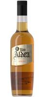

Aldea Añejo
- Origen
- La Palma
- Descripción
- Blend de rones añejados entre 1 y 3 años, que, tras su maduración en barriles nuevos de roble blanco americano, adquieren un elegante acabo, resultando ligeramente afrutados y amaderados, combinando a la perfección, la esencia de la caña de azúcar con la vainilla y el coco, aportando mayor complejidad a tu copa sin renunciar al frescor tan característico de los rones Aldea.
- Formato de venta
- Botella de ron, 1L
- Precio
- 14,80€